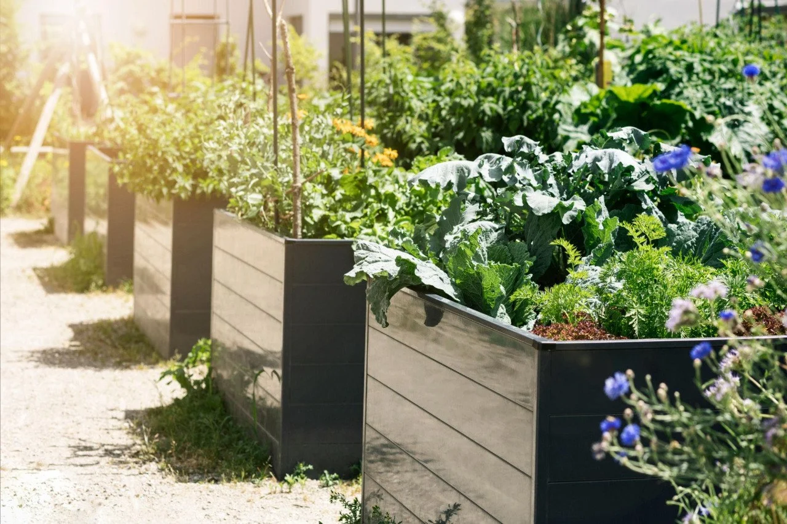

How to Build a Backyard Herb Garden You’ll Actually Use
Everything you need to create a useful herb garden, whether you have a patio, a raised bed, or just a little sunny space beside the house.
You do not need a giant herb garden to make your backyard better. You do not need 14 different herbs, a perfectly designed raised bed, or one of those magazine gardens that looks beautiful but never really gets used. A good backyard herb garden is much simpler than that.
It is just a space that gives you something back, fresh flavor, a little beauty, something good to brush past on the way through the yard, and herbs you will actually cut, dry, cook with, or share. For most people, the best herb garden is not the biggest one. It is the one that fits real life.

Existing QBL illustrationIf you just want the short version:
- ☀️ pick a sunny location
- 🌿 start with basil, chives, parsley, thyme, and oregano
- 🪴 use a raised bed or 4 to 5 containers
- 🏡 put it close to the kitchen
- ✂️ harvest often
- 🌱 expand later
First, decide what kind of herb garden fits your life
Patio or container herb garden
Good if you want herbs close to the door, easy to water, and easy to harvest in small amounts.
Raised bed herb garden
Good if you want one tidy dedicated space with room for a handful of useful herbs.
In-ground herb garden
Good if you already have a sunny edge, side yard, or garden bed where herbs can settle in and become part of the landscape.
Pollinator-friendly or grocery-saver herb garden
Good if you want herbs that help bees, butterflies, and hummingbirds or focus on real backyard value.
Put it where you’ll use it
A herb garden can be beautiful, but if it is stuck in an awkward corner you never walk past, it usually gets ignored.
- decent sun
- not too far from the kitchen
- not annoying to water
- easy to reach for quick cutting
- easy to notice every day
A slightly imperfect spot that you actually use is often better than a perfect spot you forget about.
Start with herbs you’ll actually use
For everyday meals
Think basil, parsley, chives, oregano, and thyme if your goal is flavor you will really keep reaching for.
For drinks and slow evenings
Think mint, lemon balm, chamomile, and lavender if you want a softer, more soothing herb-garden feel.
For bees and butterflies too
Think oregano, thyme, lavender, bee balm, and chives if you want a herb garden that feels alive all season.
For a simpler setup
Think thyme, oregano, chives, sage, and lavender if you want herbs that ask a little less once established.
The QBL Starter Herb Garden
🌿 A simple 4x4 bed or 4 to 5 container setup built around herbs most people will actually use.
- basil
- parsley
- chives
- oregano
- thyme
Why this works:
- good for beginners
- good for everyday cooking
- good for drying later
- good for saving money a little at a time
Keep the layout simple
Herb garden layouts do not have to be fancy, but they do need a little common sense.
- put taller herbs where they will not shade everything else
- give spreading herbs room to wander
- keep mint in its own container or controlled space
- do not crowd every plant right on top of the next one
- leave enough room to cut and harvest without fighting the whole garden
- group herbs with similar watering and sunlight needs when you can
The goal is not a perfect diagram. The goal is a herb garden you can actually move through, harvest from, and keep looking good with normal effort.
Common herb garden mistakes
Planting too many herbs at once
A smaller useful garden usually beats a crowded experimental one.
Using containers that are too small
Tiny pots dry out fast and make herbs harder to keep happy.
Putting herbs too far from where you’ll use them
If it is inconvenient, you will harvest less.
Mixing mint in with everything
Mint likes to take over, so give it its own space.
Giving the garden too much shade
Some herbs tolerate less sun, but most do better with more light.
Forgetting to harvest
A herb garden is not just something to admire from a distance. It should earn its keep.
Next steps
A backyard herb garden does not need to be perfect to be worth having.
It just needs to fit your life well enough that you keep using it. A few herbs near the house, a small raised bed, a couple pots on the patio, or a little corner that smells good and gives something back can be enough to make a backyard feel more useful, more peaceful, and more enjoyable.
If you are enjoying the Herb Hub, you can also get new herb guides, backyard ideas, projects, and updates from around the yard as they come out.